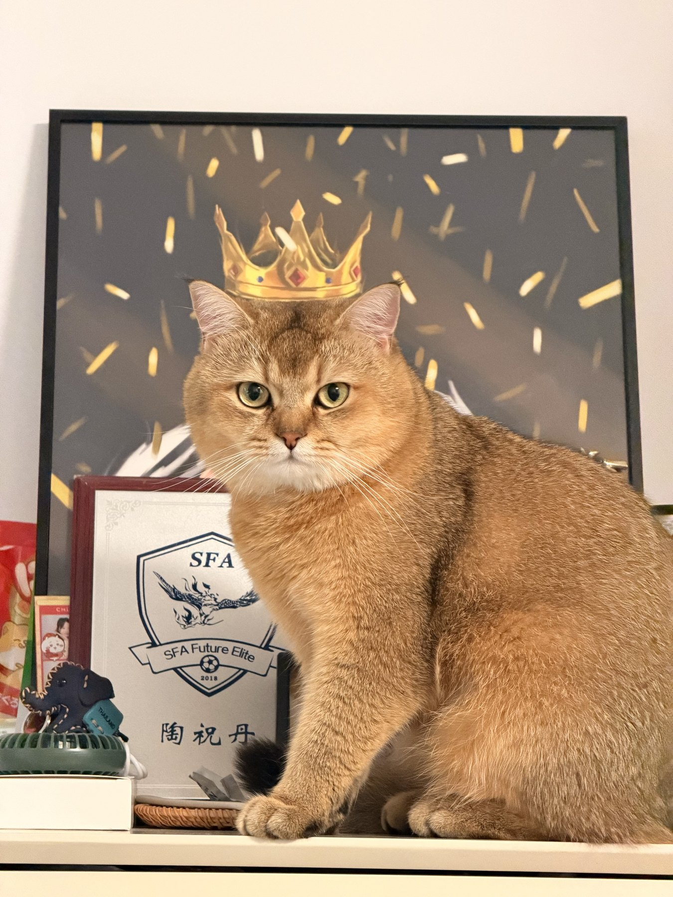
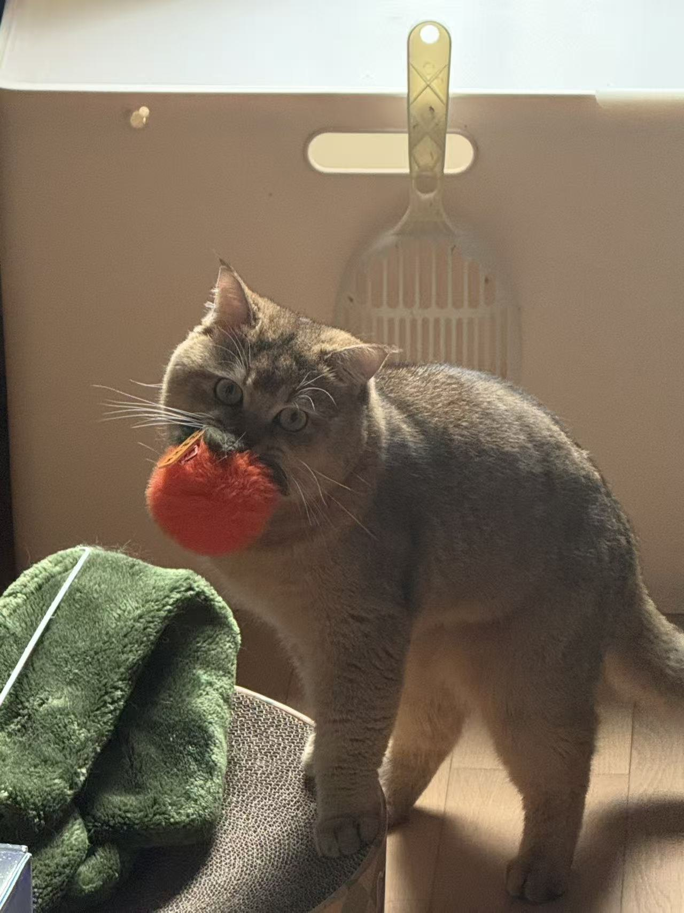
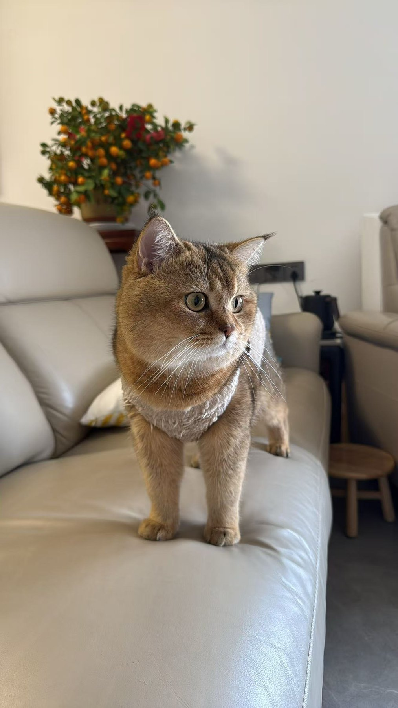
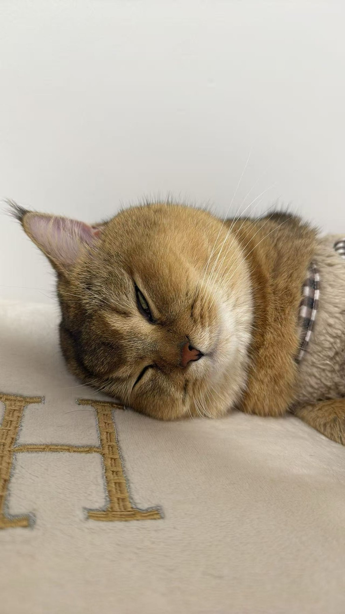
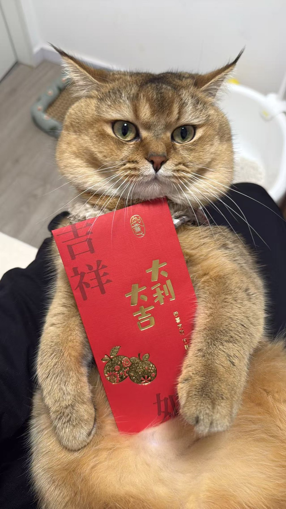

活泼
会钻进柜边缝隙，也会在饭碗旁认真巡逻，家里每个角落都想看一看。

Hello, Domi
多米已经绝育，是一只精神满满、特别亲人的小公猫。他会在沙发上巡视，也会抱着玩具认真看镜头。
会钻进柜边缝隙，也会在饭碗旁认真巡逻，家里每个角落都想看一看。
愿意被抱着，也会乖乖靠近镜头，圆圆眼睛里全是信任感。
番茄小玩具、沙发靠背、纸盒边角，都能变成他的快乐现场。
Photo Moments
这里记录多米最可爱的日常瞬间，有玩具、有小憩，也有他在家里认真巡视的样子。



